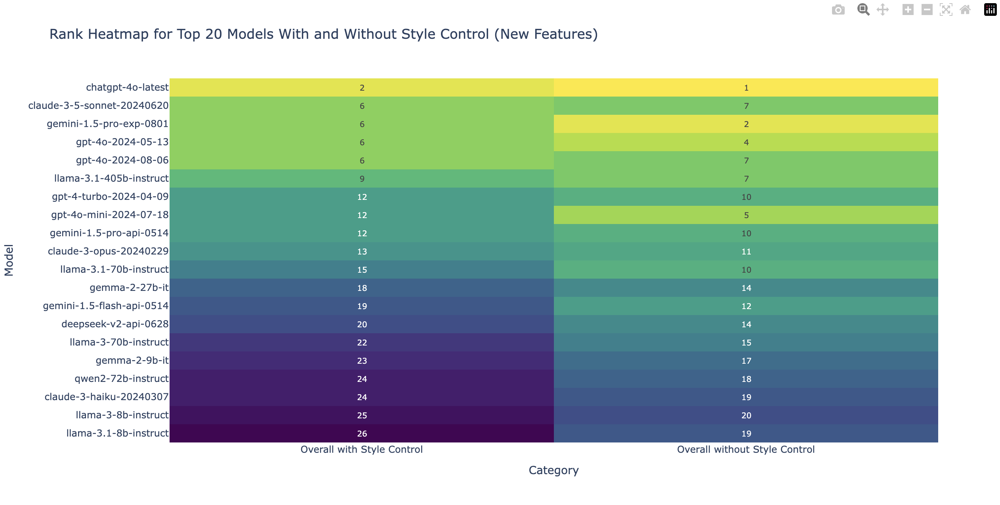

Hi, I'm Daniel Li 👋
EECS @ UC Berkeley (’25). I build ML + video processing pipelines and full‑stack apps.


Summary
- Focused on computer vision, ML systems, and full‑stack development.
- Recent interests: pose estimation, segmentation, and scalable data pipelines.
- Outside of work: soccer, pickleball, tennis, board games, and reading (TBATE & Paulo Coelho).